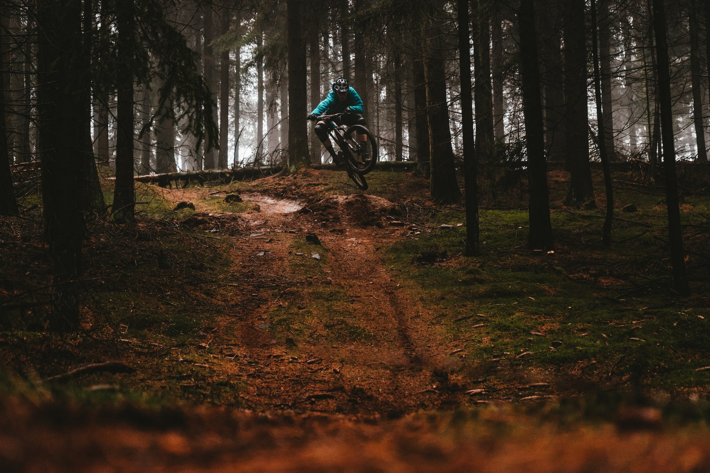

I'm really enjoying the concept of neuroplasticity.
But it's not just a concept – it's a thing! In the mere few weeks of this course so far I am already feeling changes in my own brain, and actually feeling good from some hefty brain exercise after the initial strain. An effect of learning about this, in conjunction with growth mentality, has changed how I perceive this strain. When I climb steep hills on my bike, my legs hurt. When I learn something difficult, my brain hurts. Makes sense right? At times before now I have perceived this struggle as stupidity, but it's learning and brain development of course. The analogy continues after the struggle. On the way up things are difficult and testing, but the rewards are hugely worth it.
Looking back at topics that I have learned a lot about in the past, I can feel that these pathways have been so strongly developed that they do stick. Yes, some of the details slide – but they come back when triggered. I have at times, especially since beginning dev learning, found myself wondering "how much can my brain possibly hold. Surely some information has to drop out the other end at some point ... will JavaScript make me forget my own name?". But the forming of these new pathways seems to grow and develop the brain's ability to learn and hold.
After only the last week or so, I am seeing the huge benefits of repetition and metaphor. Every time a process or task is repeated it is stamped into the old neurons that little bit more, and when a difficult new concept starts to compare to something familiar in your life you're most of the way there! To realise these upward steps in understanding, combined with an appreciation for the mental struggle, will help me engage with the concept (not just a concept) of neuroplasticity.
My interpretation of a growth mindset is to have a default will to try, and to put effort in without reservation.
What surprised me when researching growth vs fixed mindsets, is that perhaps I've shown some fixed mindsets in the last couple of weeks. I flip-flopped on this thought though, as I have had some "I can't do this" moments but never stopped pushing through. I know this isn't my first bike reference in this blog, but it's very similar to feeling like your legs are about to explode and seeing a steep climb around the corner, but deciding to pedal harder anyway. The potential is there. We just need to fully engage it.
It occurred to me during this research that there can be an element of self-consciousness to our mindset. If we are concerned about appearing to fail or be stupid during our learning process, we may not be comfortable in showing that, therefore hold back from trying as hard as we could. I don't know about you, but I have never and will never make that sort of judgement on somebody else, so why would I expect that others would make that judgement on me?
It is difficult to find any resource that doesn't reference Carol Dweck, as she appears to be a bit of a legend in the field, but I found this blog linked to be a helpful and inspiring read (which also references Carol quite a lot).
What is growth mindset and how to achieve itSome words that seem quite poignant right now: seeing opportunities instead of obstacles.
